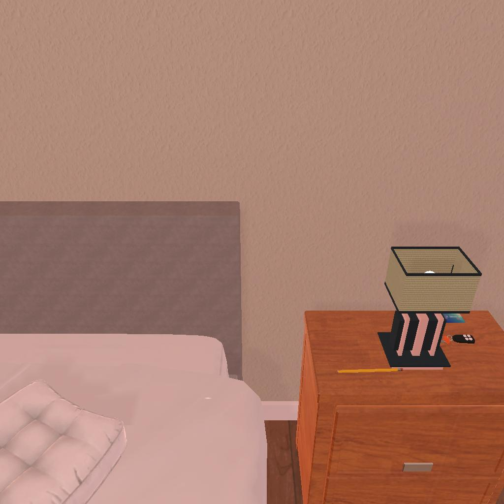

---------------------------------------------------------task: 2---------------------------------------------------------
--------------------------------------------------------------------------------------------------------------------------------------------------------------------
--------------------------------------------------------------------------------------------------------------------------------------------------------------------
Step:--------------------------------------------------------------------------2-------------------------------------------------------------------------------
----------------------------------------
VLM Prompt:
**Task**
Please perform as an embodied AI agent. Our final objective is to examine the pen with the desklamp. Below is the plan for completing the task, the current observation, alongside historical data and admissible actions for the next step. Please determine the best action for the next step!
**Plan**
Below is a detailed step-by-step plan to complete the task.
1. Find a pen.
2. Pick up the pen.
3. Locate a desklamp.
4. Turn on the desklamp.
5. Examine the pen under the light of the desklamp.
**Current Observation**
Displayed is an image capturing the current position of the agent.
**History Information**
Displayed are the previous observations with their corresponding actions.
Current State 1:
1. Place: Unknown
2. Step Index in Plan: 1
3. Objects: Sidetable, Bed
4. Action: Go to desk 1
Current State 2:
1. Place: Near desk 1
2. Step Index in Plan: 1
3. Objects: Pen, Pencil
4. Action: Go to sidetable 2
**Admissible Actions**
(1): go to bed 1
(2): go to dresser 1
(3): go to bed 2
(4): go to drawer 1
(5): go to sidetable 1
(6): go to drawer 2
(7): go to drawer 3
(8): go to drawer 4
(9): go to garbagecan 1
(10): go to drawer 5
(11): go to drawer 6
(12): go to drawer 7
(13): go to drawer 8
(14): go to drawer 9
(15): go to drawer 10
(16): go to drawer 11
(17): go to safe 1
(18): take pillow 1 from sidetable 2
(19): take keychain 1 from sidetable 2
(20): take pencil 2 from sidetable 2
(21): take creditcard 1 from sidetable 2
(22): use desklamp 1
**Analysis Guideline**
1. Analyze the **History Information** and determine our current step in the plan and our current place.
2. List all visible objects related to the task in the current observation.
3. Analyze the objects in the current observation based on the history and the requirements for the current step, and then determine if we can complete the step with the current observation.
4. Analyze and decide on the most appropriate action to take.
5. Summarize the analysis using the following format: "Analysis: [The summarization of the analysis], The Most Appropriate Action: (i which is the integer.): [Selected action]"
**Notes**
1. We must complete each step of the plan in order and cannot skip steps when the previous ones are not finished.
2. For "Go to" actions listed as "go to xxx [n]", interpret this as there are n distinct actions available: "go to xxx 1", "go to xxx 2", ..., "go to xxx n". Select one specific action from these options instead of using "go to xxx [n]".
3. If receptacles such as drawers, cabinets, and so forth are closed in the current observation, we may try to open them.
4. Pay attention to synonyms and ensure clarity in the terms used.
5. If there is no history available, we are at the first step and the current place is "Unknown".
6. The most appropriate action must be in the **Admissible Actions**, and we cannot generate a new action that is not in the **Admissible Actions**.
**Answer**
Please select the most suitable action by following the **Analysis Guideline**, keeping the above **Notes** in mind.
----------------------------------------
----------------------------------------
VLM Response:
Analysis: According to the History Information, we are currently at step index 1 in the plan, which is to find a pen, and our current place is near sidetable 2. The current observation shows a pen on the sidetable 2, which is related to our task. Since we are at the step of finding a pen and we have located one, we can now move to the next step, which is to pick up the pen. The Most Appropriate Action: (20): take pencil 2 from sidetable 2
Note: The action specifies "pencil 2" which seems to be a mislabeling as the object is a "pen" according to the plan. Assuming this is the correct action for picking up the pen, we will proceed with it. If "pencil 2" is indeed a different object, we would need an action that specifically states "take pen from sidetable 2," which is not listed in the Admissible Actions.
----------------------------------------
----------------------------------------
>>> Refine VLM Response and Get Pure Action: take pencil 2 from sidetable 2
Note: The action specifies "pencil 2" which seems to be a mislabeling as the object is a "pen" according to the plan
----------------------------------------
-----------------------------------------------------------------
Running time: 9.727735042572021 seconds
Total Money: 0.7752699999999999
-----------------------------------------------------------------
-----------------------------------------------------------------
Summarization Prompt:
**Context**
Analysis: According to the History Information, we are currently at step index 1 in the plan, which is to find a pen, and our current place is near sidetable 2. The current observation shows a pen on the sidetable 2, which is related to our task. Since we are at the step of finding a pen and we have located one, we can now move to the next step, which is to pick up the pen. The Most Appropriate Action: (20): take pencil 2 from sidetable 2
Note: The action specifies "pencil 2" which seems to be a mislabeling as the object is a "pen" according to the plan. Assuming this is the correct action for picking up the pen, we will proceed with it. If "pencil 2" is indeed a different object, we would need an action that specifically states "take pen from sidetable 2," which is not listed in the Admissible Actions.
**Summary Format**
1. Place: [Specify the current location]
2. Step Index in Plan: [Dispkay the current step number in the plan before taking the current action]
3. Objects: [List the objects relevant to the task]
4. Action: [Describe the most appropriate action without the "(x)" and keep the integer of the object]
Please analyze the **Context** and summarize the analysis using the **Summary Format**.
-----------------------------------------------------------------
-----------------------------------------------------------------
Summarization Response:
1. Place: Near sidetable 2
2. Step Index in Plan: 1
3. Objects: Pen on sidetable 2
4. Action: Take pencil 2 from sidetable 2
-----------------------------------------------------------------
-----------------------------------------------------------------
Text Observation:You pick up the pencil 2 from the the plan.
-----------------------------------------------------------------
UNSUCCEED